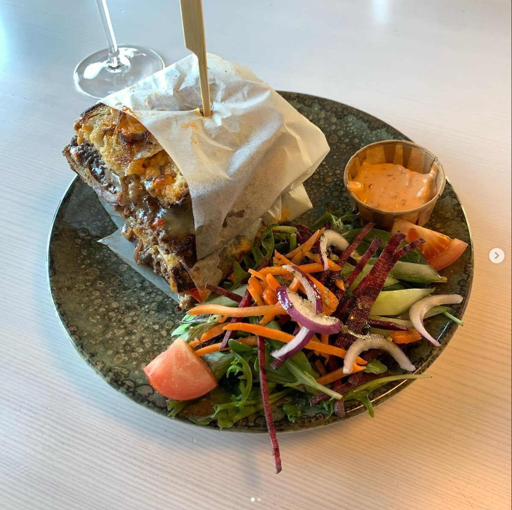

Surfers is a standout choice for anyone craving authentic Chinese cuisine with a modern flair. üçú
The restaurant’s menu offers a diverse selection of dishes, from delicately crafted dumplings to the
rich and flavorful Peking duck. Each dish is prepared with the freshest ingredients and traditional
cooking techniques, ensuring a high-quality dining experience. ü•¢üåü The ambiance of Surfers is cozy
and welcoming, making it a great spot for both casual meals and special celebrations. The
restaurant’s commitment to authentic flavors and attentive service makes every visit a memorable
one.
One of the highlights of Surfers is their hand-pulled noodles, which are made fresh and provide a
perfect texture that complements the rich sauces and ingredients. Another favorite is their hot and
sour soup, which strikes a wonderful balance between spicy and tangy flavors. ü•ò The staff is
friendly and knowledgeable, always ready to offer recommendations or customize your order to suit
your preferences. Discover why Surfers has become a go-to destination for Chinese food lovers and
enjoy a dining experience that blends tradition with modern excellence. üçΩÔ∏è
Giros Pizza
Giros Pizza brings an authentic taste of Italy to your table with its wide array of delicious pizza
options. üçï Each pizza is crafted with high-quality ingredients and a passion for great food,
resulting in a thin, crispy crust that serves as the perfect base for a variety of toppings. From
the classic Margherita to inventive specialty pies, Giros Pizza ensures that there’s something to
satisfy every palate. üçÖüßÄ The restaurant‚Äôs warm, rustic atmosphere makes it an ideal place for
family dinners or a casual night out with friends.
The attention to detail in each pizza, from the rich tomato sauce to the perfectly melted cheese,
reflects Giros Pizza’s commitment to delivering an exceptional dining experience. Their homemade
gelato is the perfect way to end your meal on a sweet note, offering a refreshing and indulgent
treat. üáÆüáπ Whether you‚Äôre a pizza enthusiast or simply looking for a great place to eat, Giros
Pizza promises a delightful culinary experience that combines quality, flavor, and a touch of
Italian charm. üç®
Zapp Thai crispy pork
Zapp Thai offers a vibrant and authentic Thai dining experience that‚Äôs sure to impress. üç≤ The
restaurant’s menu features a wide variety of Thai dishes, from spicy curries to tangy pad Thai, each
prepared with fresh ingredients and traditional flavors. The colorful decor and friendly staff
create a welcoming atmosphere that enhances the dining experience. üå∂Ô∏èü•• Whether you‚Äôre a fan of
spicy foods or prefer milder options, Zapp Thai has something for everyone, ensuring a satisfying
meal for all tastes.
Notable dishes include the rich green curry, known for its creamy texture and aromatic spices, and
the crispy spring rolls, which are perfect for sharing with friends. The restaurant’s dedication to
authentic flavors and high-quality ingredients makes every visit a culinary adventure. ü•¢ Zapp Thai
is a great choice for anyone looking to enjoy delicious Thai food in a relaxed and inviting setting.
Explore their menu and discover why this restaurant is a favorite among those who love flavorful,
vibrant cuisine. üç¥
Kaferang brunch sandwich

Start your day off right with a visit to K√§ferang, a top destination for brunch enthusiasts. üç≥ü•ê
This brunch spot is renowned for its delicious offerings, from fluffy pancakes and savory eggs
benedict to freshly baked pastries and creamy avocado toast. The restaurant’s chic and cozy ambiance
makes it an excellent choice for a relaxed weekend brunch or a special morning meal with friends and
family. ü•ëüçΩÔ∏è K√§ferang‚Äôs attention to detail in both food and atmosphere ensures a delightful
experience every time you visit.
The standout dishes at Käferang include their buttery croissants and rich, flavorful eggs benedict,
which are perfect for starting your day on a high note. Their specialty coffee and freshly squeezed
juices complement the brunch menu perfectly, adding a touch of indulgence to your meal. ‚òïüçá Whether
you’re looking for a hearty breakfast or a light, refreshing brunch, Käferang offers a delightful
array of options that are sure to satisfy. Enjoy a memorable brunch experience and discover why
K√§ferang is a must-visit spot for brunch lovers. üç¥